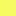

<!doctype html>
<html lang="en">
    <head>
        <meta charset="utf-8">
        <meta http-equiv="X-UA-Compatible" content="IE=edge">
        <meta name="viewport" content="initial-scale=1,user-scalable=no,maximum-scale=1,width=device-width">
        <meta name="mobile-web-app-capable" content="yes">
        <meta name="apple-mobile-web-app-capable" content="yes">
        <link rel="stylesheet" href="css/leaflet.css">
        <link rel="stylesheet" href="css/qgis2web.css"><link rel="stylesheet" href="css/fontawesome-all.min.css">
        <style>
        #map {
            width: 710px;
            height: 540px;
        }
        </style>
        <title></title>
    </head>
    <body>
        <div id="map">
        </div>
        <script src="js/qgis2web_expressions.js"></script>
        <script src="js/leaflet.js"></script>
        <script src="js/leaflet.rotatedMarker.js"></script>
        <script src="js/leaflet.pattern.js"></script>
        <script src="js/leaflet-hash.js"></script>
        <script src="js/Autolinker.min.js"></script>
        <script src="js/rbush.min.js"></script>
        <script src="js/labelgun.min.js"></script>
        <script src="js/labels.js"></script>
        <script src="data/low_Kouhu_3.js"></script>
        <script src="data/low_no17road_4.js"></script>
        <script src="data/low_5.js"></script>
        <script>
        var map = L.map('map', {
            zoomControl:true, maxZoom:28, minZoom:1
        }).fitBounds([[23.72192772751507,120.22129548800498],[23.882786250612956,120.4329829124535]]);
        var hash = new L.Hash(map);
        map.attributionControl.setPrefix('<a href="https://github.com/tomchadwin/qgis2web" target="_blank">qgis2web</a> &middot; <a href="https://leafletjs.com" title="A JS library for interactive maps">Leaflet</a> &middot; <a href="https://qgis.org">QGIS</a>');
        var autolinker = new Autolinker({truncate: {length: 30, location: 'smart'}});
        var bounds_group = new L.featureGroup([]);
        function setBounds() {
        }
        map.createPane('pane_OpenStreetMap_0');
        map.getPane('pane_OpenStreetMap_0').style.zIndex = 400;
        var layer_OpenStreetMap_0 = L.tileLayer('https://tile.openstreetmap.org/{z}/{x}/{y}.png', {
            pane: 'pane_OpenStreetMap_0',
            opacity: 1.0,
            attribution: '',
            minZoom: 1,
            maxZoom: 28,
            minNativeZoom: 0,
            maxNativeZoom: 19
        });
        layer_OpenStreetMap_0;
        map.addLayer(layer_OpenStreetMap_0);
        map.createPane('pane_GoogleSatellite_1');
        map.getPane('pane_GoogleSatellite_1').style.zIndex = 401;
        var layer_GoogleSatellite_1 = L.tileLayer('http://mt0.google.com/vt/lyrs=s&hl=en&x={x}&y={y}&z={z}', {
            pane: 'pane_GoogleSatellite_1',
            opacity: 1.0,
            attribution: '',
            minZoom: 1,
            maxZoom: 28,
            minNativeZoom: 0,
            maxNativeZoom: 18
        });
        layer_GoogleSatellite_1;
        map.addLayer(layer_GoogleSatellite_1);
        map.createPane('pane_low_fishpond_2');
        map.getPane('pane_low_fishpond_2').style.zIndex = 402;
        var img_low_fishpond_2 = 'data/low_fishpond_2.png';
        var img_bounds_low_fishpond_2 = [[22.43540195457194,120.126868487589],[24.050474669039936,120.64070868020987]];
        var layer_low_fishpond_2 = new L.imageOverlay(img_low_fishpond_2,
                                              img_bounds_low_fishpond_2,
                                              {pane: 'pane_low_fishpond_2'});
        bounds_group.addLayer(layer_low_fishpond_2);
        map.addLayer(layer_low_fishpond_2);
        function pop_low_Kouhu_3(feature, layer) {
            var popupContent = '<table>\
                    <tr>\
                        <td colspan="2">' + (feature.properties['id'] !== null ? autolinker.link(feature.properties['id'].toLocaleString()) : '') + '</td>\
                    </tr>\
                </table>';
            layer.bindPopup(popupContent, {maxHeight: 400});
        }

        function style_low_Kouhu_3_0() {
            return {
                pane: 'pane_low_Kouhu_3',
                opacity: 1,
                color: 'rgba(242,252,34,1.0)',
                dashArray: '',
                lineCap: 'butt',
                lineJoin: 'miter',
                weight: 1, 
                fill: true,
                fillOpacity: 1,
                fillColor: 'rgba(242,252,34,0.7019607843137254)',
                interactive: true,
            }
        }
        map.createPane('pane_low_Kouhu_3');
        map.getPane('pane_low_Kouhu_3').style.zIndex = 403;
        map.getPane('pane_low_Kouhu_3').style['mix-blend-mode'] = 'normal';
        var layer_low_Kouhu_3 = new L.geoJson(json_low_Kouhu_3, {
            attribution: '',
            interactive: true,
            dataVar: 'json_low_Kouhu_3',
            layerName: 'layer_low_Kouhu_3',
            pane: 'pane_low_Kouhu_3',
            onEachFeature: pop_low_Kouhu_3,
            style: style_low_Kouhu_3_0,
        });
        bounds_group.addLayer(layer_low_Kouhu_3);
        map.addLayer(layer_low_Kouhu_3);
        function pop_low_no17road_4(feature, layer) {
            var popupContent = '<table>\
                    <tr>\
                        <td colspan="2">' + (feature.properties['id'] !== null ? autolinker.link(feature.properties['id'].toLocaleString()) : '') + '</td>\
                    </tr>\
                </table>';
            layer.bindPopup(popupContent, {maxHeight: 400});
        }

        function style_low_no17road_4_0() {
            return {
                pane: 'pane_low_no17road_4',
                opacity: 1,
                color: 'rgba(51,160,44,1.0)',
                dashArray: '',
                lineCap: 'butt',
                lineJoin: 'miter',
                weight: 1, 
                fill: true,
                fillOpacity: 1,
                fillColor: 'rgba(51,160,44,0.7019607843137254)',
                interactive: true,
            }
        }
        map.createPane('pane_low_no17road_4');
        map.getPane('pane_low_no17road_4').style.zIndex = 404;
        map.getPane('pane_low_no17road_4').style['mix-blend-mode'] = 'normal';
        var layer_low_no17road_4 = new L.geoJson(json_low_no17road_4, {
            attribution: '',
            interactive: true,
            dataVar: 'json_low_no17road_4',
            layerName: 'layer_low_no17road_4',
            pane: 'pane_low_no17road_4',
            onEachFeature: pop_low_no17road_4,
            style: style_low_no17road_4_0,
        });
        bounds_group.addLayer(layer_low_no17road_4);
        map.addLayer(layer_low_no17road_4);
        function pop_low_5(feature, layer) {
            var popupContent = '<table>\
                    <tr>\
                        <td colspan="2">' + (feature.properties['id'] !== null ? autolinker.link(feature.properties['id'].toLocaleString()) : '') + '</td>\
                    </tr>\
                </table>';
            layer.bindPopup(popupContent, {maxHeight: 400});
        }

        function style_low_5_0() {
            return {
                pane: 'pane_low_5',
                opacity: 1,
                color: 'rgba(227,26,28,1.0)',
                dashArray: '',
                lineCap: 'butt',
                lineJoin: 'miter',
                weight: 1, 
                fill: true,
                fillOpacity: 1,
                fillColor: 'rgba(227,26,28,0.7019607843137254)',
                interactive: true,
            }
        }
        map.createPane('pane_low_5');
        map.getPane('pane_low_5').style.zIndex = 405;
        map.getPane('pane_low_5').style['mix-blend-mode'] = 'normal';
        var layer_low_5 = new L.geoJson(json_low_5, {
            attribution: '',
            interactive: true,
            dataVar: 'json_low_5',
            layerName: 'layer_low_5',
            pane: 'pane_low_5',
            onEachFeature: pop_low_5,
            style: style_low_5_0,
        });
        bounds_group.addLayer(layer_low_5);
        map.addLayer(layer_low_5);
        var baseMaps = {};
        L.control.layers(baseMaps,{' low': layer_low_5,' low_no.17 road': layer_low_no17road_4,' low_Kouhu ': layer_low_Kouhu_3,"low_fish pond": layer_low_fishpond_2,"Google Satellite": layer_GoogleSatellite_1,"OpenStreetMap": layer_OpenStreetMap_0,},{collapsed:false}).addTo(map);
        setBounds();
        L.ImageOverlay.include({
            getBounds: function () {
                return this._bounds;
            }
        });
        </script>
    </body>
</html>
